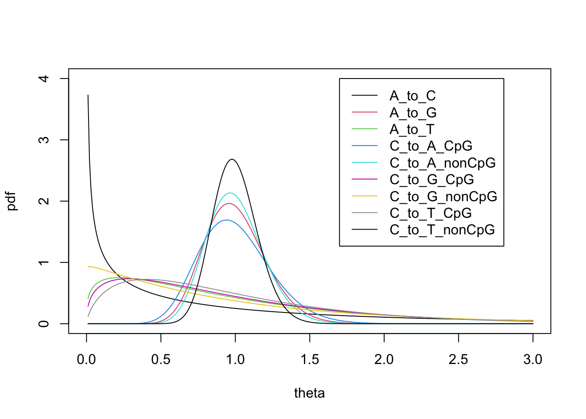

Mutation type specific overdispersion
Last updated: 2022-04-27
Checks: 7 0
Knit directory: mutation_rate_modeling/
This reproducible R Markdown analysis was created with workflowr (version 1.7.0). The Checks tab describes the reproducibility checks that were applied when the results were created. The Past versions tab lists the development history.
Great! Since the R Markdown file has been committed to the Git repository, you know the exact version of the code that produced these results.
Great job! The global environment was empty. Objects defined in the global environment can affect the analysis in your R Markdown file in unknown ways. For reproduciblity it’s best to always run the code in an empty environment.
The command set.seed(20220224) was run prior to running the code in the R Markdown file. Setting a seed ensures that any results that rely on randomness, e.g. subsampling or permutations, are reproducible.
Great job! Recording the operating system, R version, and package versions is critical for reproducibility.
Nice! There were no cached chunks for this analysis, so you can be confident that you successfully produced the results during this run.
Great job! Using relative paths to the files within your workflowr project makes it easier to run your code on other machines.
Great! You are using Git for version control. Tracking code development and connecting the code version to the results is critical for reproducibility.
The results in this page were generated with repository version c1eb7b8. See the Past versions tab to see a history of the changes made to the R Markdown and HTML files.
Note that you need to be careful to ensure that all relevant files for the analysis have been committed to Git prior to generating the results (you can use wflow_publish or wflow_git_commit). workflowr only checks the R Markdown file, but you know if there are other scripts or data files that it depends on. Below is the status of the Git repository when the results were generated:
Ignored files:
Ignored: .DS_Store
Ignored: .RData
Ignored: .Rhistory
Ignored: data/.DS_Store
Untracked files:
Untracked: VennDiagram.2022-04-06_15-03-36.log
Untracked: VennDiagram.2022-04-13_12-47-23.log
Untracked: VennDiagram.2022-04-13_12-51-01.log
Untracked: VennDiagram.2022-04-13_12-52-58.log
Untracked: VennDiagram.2022-04-13_12-58-02.log
Untracked: VennDiagram.2022-04-13_14-58-41.log
Untracked: VennDiagram.2022-04-18_01-35-01.log
Untracked: VennDiagram.2022-04-18_01-40-42.log
Untracked: VennDiagram.2022-04-21_14-57-10.log
Untracked: VennDiagram.2022-04-22_12-29-03.log
Note that any generated files, e.g. HTML, png, CSS, etc., are not included in this status report because it is ok for generated content to have uncommitted changes.
These are the previous versions of the repository in which changes were made to the R Markdown (analysis/index.Rmd) and HTML (docs/index.html) files. If you’ve configured a remote Git repository (see ?wflow_git_remote), click on the hyperlinks in the table below to view the files as they were in that past version.
| File | Version | Author | Date | Message |
|---|---|---|---|---|
| Rmd | c1eb7b8 | Lifan Liang | 2022-04-27 | wflow_publish(c("analysis", "docs")) |
| html | ebc39cc | Lifan Liang | 2022-04-22 | Build site. |
| html | bad560d | Lifan Liang | 2022-04-21 | Build site. |
| Rmd | 71b65e8 | Lifan Liang | 2022-04-21 | wflow_publish("analysis/") |
| html | 8d95eba | Lifan Liang | 2022-04-18 | Build site. |
| Rmd | e187c35 | Lifan Liang | 2022-04-18 | wflow_publish("analysis/") |
| html | b345803 | Lifan Liang | 2022-04-18 | Build site. |
| Rmd | d4a17bc | Lifan Liang | 2022-04-18 | wflow_publish("analysis/") |
| html | a049b67 | Lifan Liang | 2022-04-13 | Build site. |
| Rmd | 0a8ec2b | Lifan Liang | 2022-04-13 | wflow_publish(c("analysis", "docs")) |
| html | 6077376 | Lifan Liang | 2022-04-13 | Build site. |
| Rmd | 699c574 | Lifan Liang | 2022-04-13 | wflow_publish(c("analysis", "docs")) |
| html | 852e6d8 | Lifan Liang | 2022-04-13 | Build site. |
| Rmd | e9731b9 | Lifan Liang | 2022-04-13 | wflow_publish("analysis") |
| html | 1e4c04d | Lifan Liang | 2022-04-13 | Build site. |
| Rmd | 82722f8 | Lifan Liang | 2022-04-13 | wflow_publish("analysis") |
| html | 3978540 | Lifan Liang | 2022-04-06 | Build site. |
| Rmd | b8f014a | Lifan Liang | 2022-04-06 | wflow_publish(c("analysis", "data", "docs")) |
| html | a50ea9a | Lifan Liang | 2022-03-30 | Build site. |
| Rmd | 10d85d8 | Lifan Liang | 2022-03-30 | wflow_publish("analysis") |
| html | fbef0e1 | Lifan Liang | 2022-03-30 | Build site. |
| Rmd | 8ed415f | Lifan Liang | 2022-03-30 | wflow_publish("analysis") |
| html | 7f636da | Lifan Liang | 2022-03-30 | Build site. |
| Rmd | 964ae17 | Lifan Liang | 2022-03-30 | wflow_publish(c("analysis", "data", "docs")) |
| html | 964ae17 | Lifan Liang | 2022-03-30 | wflow_publish(c("analysis", "data", "docs")) |
| html | eb6e4e8 | Lifan Liang | 2022-03-14 | Build site. |
| Rmd | ad308fe | Lifan Liang | 2022-03-14 | wflow_publish("analysis") |
| html | 7feb266 | Lifan Liang | 2022-03-09 | Build site. |
| Rmd | 4b51b43 | Lifan Liang | 2022-03-09 | wflow_publish(c("analysis", "docs", "data")) |
| html | 4b51b43 | Lifan Liang | 2022-03-09 | wflow_publish(c("analysis", "docs", "data")) |
| html | cd9a5f6 | Lifan Liang | 2022-03-01 | Build site. |
| Rmd | a64ace5 | Lifan Liang | 2022-03-01 | wflow_publish(c("analysis", "data")) |
| html | f999706 | Lifan Liang | 2022-02-27 | Build site. |
| Rmd | f992089 | Lifan Liang | 2022-02-27 | wflow_publish(c("analysis", "data")) |
| Rmd | b41be05 | Lifan Liang | 2022-02-24 | Start workflowr project. |
Problem overview
For the \(i\)th window with a certain size in the genome, we assume the observed mutation rates (\(y_i\)) and expected mutation rates (\(mu_i\)) were generated with the probabilistic model below: \[ y_i \sim Poisson(\mu_i\theta_i) \] \[ \theta_i \sim Gamma(\alpha,\alpha) \]
MLE of overdispersion (\(\alpha\))
Integrate out \(\theta_i\) \[ P(y_i | \mu_i, \alpha) = \int_0^{+\infty} P(y_i|\mu_i,\theta_i)P(\theta_i|\alpha) \,d\theta_i =\dfrac{\mu_i^{y_i} \alpha^\alpha}{y_i!\Gamma(\alpha)}\int_0^{+\infty} \theta_i^{y_i+\alpha-1}e^{-(\mu_i+\alpha)\theta_i}\,d\theta_i \] The integral part is the same as the kernel of \(\theta_i\sim Gamma(y_i+\alpha, \mu_i+\alpha)\). Thus we got \[ P(y_i | \mu_i, \alpha)=\dfrac{\mu_i^{y_i} \alpha^\alpha}{y_i!\Gamma(\alpha)}\cdot \dfrac{\Gamma(y_i+\alpha)}{(\mu_i+\alpha)^{y_i+\alpha}} \] The loglikelihood would be: \[ \ell(\alpha;y_i,\mu_i) \propto log(\dfrac{\Gamma(y_i+\alpha)}{\Gamma(\alpha)})-y_ilog(\mu_i+\alpha)-\alpha log(1+\mu_i/\alpha) \] Considering the sparsity and the large sample size (3e10/window_size), we can further simplify the computation by isolating the scenario where \(y_i=0\). When \(y_i=0,\mu_i=0\), \(LL\) can be ignored: \[ \ell(\alpha;y_i,\mu_i) = const \] When \(y_i=0,\mu_i>0\): \[ \ell(\alpha;y_i,\mu_i) \propto -\alpha log(1+\mu_i/\alpha) \]
Validation of the estimator
optim with “BFGS” method was used for MLE of overdispersion. I recomputed \(\alpha\) for 5k window mutation rates. Estimated \(\alpha\) is 2.709, close to the values in the proposal.
Asymptotic normality of MLE
The second derivative of \(\ell(\alpha;y_i,\mu_i)\) is \[ \frac{d^2}{d\alpha^2}\ell(\alpha;y_i,\mu_i)=\sum_{k=1}^{y_i}\frac{-1}{(\alpha+k)^2}+\frac{y_i}{(\mu_i+\alpha)^2}+\frac{1}{\alpha}-\frac{\mu_i}{(\alpha+\mu_i)^2}-\frac{1}{\alpha+\mu_i} \] We used \(\frac{d^2}{d\alpha^2}\ell(\alpha;y_i,\mu_i)\) to estimate the standard deviation of \(\alpha\).
Estimating \(\alpha\) for different mutation types
- Results here are based on 100 bp window size
| mut_type | alpha |
|---|---|
| A_to_C | 0.0194250 |
| A_to_G | 0.3729952 |
| A_to_T | 0.0378105 |
| C_to_A/CpG | 3.7335085 |
| C_to_A/nonCpG | 0.0640994 |
| C_to_G/CpG | 3.7227402 |
| C_to_G/nonCpG | 0.1168848 |
| C_to_T/CpG | 0.1879970 |
| C_to_T/nonCpG | 0.2260366 |
The plot of the gamma distribution. “C_to_A.CpG” and “C_to_G.CpG” are too close to seperate.
| Version | Author | Date |
|---|---|---|
| f999706 | Lifan Liang | 2022-02-27 |
Aggregate 100 bp to estimate \(\alpha\) for 5K bps
| mut_type | alpha | std |
|---|---|---|
| A_to_C | 0.53 | 24315.78 |
| A_to_G | 23.33 | 4.43 |
| A_to_T | 1.28 | 3041.25 |
| C_to_A_CpG | 17.12 | 0.38 |
| C_to_A_nonCpG | 27.74 | 0.89 |
| C_to_G_CpG | 1.40 | 303.61 |
| C_to_G_nonCpG | 1.02 | 6838.35 |
| C_to_T_CpG | 1.67 | 4263.19 |
| C_to_T_nonCpG | 44.40 | 0.61 |

| Version | Author | Date |
|---|---|---|
| 4b51b43 | Lifan Liang | 2022-03-09 |
| cd9a5f6 | Lifan Liang | 2022-03-01 |
Observed rates vs. expected rates
Correlation at 5kb level
The correlation between expected rates and observed rates is probably weak. This is consistent across mutation types (the figure on the top) and the total rate counts (the bottom figure).
Correlation at chromosome level
There is strong correlation when the mutation counts are summed up to the chromosome level.
Total counts for each mutation type
The total counts are also quite close between observed and expected.
| mutation type | observed counts | expected counts |
|---|---|---|
| A_to_C_and_5k.stat | 7799.0 | 9107.146427551219 |
| C_to_T_nonCpG_5k.stat | 27716.0 | 30422.830678788276 |
| C_to_A_CpG_5k.stat | 1052.0 | 932.9034470382618 |
| C_to_G_nonCpG_5k.stat | 9799.0 | 10088.667585756764 |
| A_to_T_and_5k.stat | 7407.0 | 7767.137108131126 |
| C_to_A_nonCpG_5k.stat | 10002.0 | 10402.731650556543 |
| A_to_G_and_5k.stat | 30001.0 | 30685.1840776996 |
| C_to_G_CpG_5k.stat | 899.0 | 781.5190549596658 |
| C_to_T_CpG_5k.stat | 20166.0 | 20643.965893071087 |
Definition of hotspots
\(\ell(\alpha;y_i,\mu_i)\) is actually the normalization factor for \(P(\theta|y_i,\mu_i,\alpha)\), the posterior \(theta\) is \(Gamma(y_i+\alpha, \mu_i+\alpha)\). Hence we have \[ E(\theta|y_i,\mu_i,\alpha)=\frac{y_i+\alpha}{\mu_i+\alpha} \]
Previously, I tried to define hotspots based on \(E(\theta|y_i,\mu_i,\alpha)\). As shown in the figure below, large \(\alpha\) in some mutation types may make it difficult to find hotspots.
Alternatively, we detect hotspots with a simple test. Say the null model is that: \[ y_i \sim Poisson(\mu_i) \] And the alternative is that \(y_i\) is not sampled from the Poisson of \(\mu_i\). We used \(P<0.05\) as the criteria.
Hotspots continuity
I computed how many hotspot windows are actually adjacent to another (“continuous” column in the count table). C_to_T and A_to_G have the most hotspots.
| total | hotspots | continuous | |
|---|---|---|---|
| A_to_C_and_5k | 576194 | 76 | 0 |
| C_to_T_nonCpG_5k | 576194 | 164 | 0 |
| C_to_A_CpG_5k | 576194 | 5 | 0 |
| C_to_G_nonCpG_5k | 576194 | 170 | 2 |
| A_to_T_and_5k | 576194 | 81 | 0 |
| C_to_A_nonCpG_5k | 576194 | 124 | 0 |
| A_to_G_and_5k | 576194 | 62 | 0 |
| C_to_G_CpG_5k | 576194 | 177 | 0 |
| C_to_T_CpG_5k | 576194 | 254 | 0 |
Then, we looked into the distance from each hotspot to its closest hotspot window. Hotspots in C_to_T and A_to_G have smaller distances. This result is consistent with the count table above .
Hotspot overlap across mutation types (one 5k window away)
Here, we define the overlap as two hotspot windows are one window away. Jaccard coefficient was computed. \[ Jaccard(A,B) = \dfrac{|A\cap B|}{|A\cup B|} \]

| Version | Author | Date |
|---|---|---|
| b345803 | Lifan Liang | 2022-04-18 |
| 3978540 | Lifan Liang | 2022-04-06 |
| 964ae17 | Lifan Liang | 2022-03-30 |
As shown in the heatmap, A_to_G, C_to_T_CpG, and C_to_T_nonCpG share more hotspots. Hotspots in C_to_G_CpG and C_to_A_CpG are not similar to other mutation types.

| Version | Author | Date |
|---|---|---|
| b345803 | Lifan Liang | 2022-04-18 |
| 3978540 | Lifan Liang | 2022-04-06 |
| 964ae17 | Lifan Liang | 2022-03-30 |
Bayesian Poisson regression
Given observed mutation rates (\(y_i\)), baseline mutation rates (\(\mu_i\)) and 14 genomic features (\(X_i\)). The generative process is
\[ \tau^2_j \sim Inv-\chi^2(1,1) \] \[ \beta_{jt} \sim N(0,\tau^2_j) \] \[ \theta_{it} = exp(\beta_{0t}+\sum_j \beta_{jt}X_{ij}) \]
\[ Y_{it} \sim Pois(\mu_i \cdot \theta_{it}) \]
Numpyro MCMC was used to infer the posterior of \(\beta_{jt}\).
I initialized four chains. For each chain, 2000 samples were drawn after warmup of 1000 samples. Chains seem mixed.
.
Stan implementation
The same model was implemented with rstan. The NUTS sampler was used. I initiated 4 chains
Diagnostics
First, the four chains were well mixed, as shown below.
Next, the energy distribution was close to the marginal energy distribution. According to Stan user guide, this is a good sign that the sampler explored the target distribution efficiently.
We further performed the posterior predictive check. Essentially, we draw a vector of \(\beta\) from the posterior and draw \(\tilde{y}\) from the Poisson distribution parameterized by \(\beta\). Then we compared the distribution of \(\tilde{y}\) and observed \(y\).
As shown in the figure below, \(\tilde{y}\) is close to \(y\) across mutation types.
Parameter estimation
Cross validation with log pointwise posterior probability (lpd)
The idea is to estimate parameters with one set of windows and estimate the fitness in another set of windows. According to Stan user guide, lpd can be computed as:
\[ lpd=\frac{1}{N}\sum_{n=1}^N{log\,p(y_n|y,M_1)} \] where \(p(y_n|y,M_1)\) can be obtained by averaging over posterior predictive. \[ p(y_n|y,M_1)=\int{P(y_n|\theta)P(\theta|y,M_1)}\,d\theta=E_{\theta|y}(l(\theta;y_n)) \]
Suppose we already obtained posterior samples of \(\tau\) and \(\beta\) from the odd windows. To estimate lpd in the even windows,
sessionInfo()R version 4.1.2 (2021-11-01)
Platform: x86_64-apple-darwin17.0 (64-bit)
Running under: macOS Big Sur 10.16
Matrix products: default
BLAS: /Library/Frameworks/R.framework/Versions/4.1/Resources/lib/libRblas.0.dylib
LAPACK: /Library/Frameworks/R.framework/Versions/4.1/Resources/lib/libRlapack.dylib
locale:
[1] en_US.UTF-8/en_US.UTF-8/en_US.UTF-8/C/en_US.UTF-8/en_US.UTF-8
attached base packages:
[1] stats4 stats graphics grDevices utils datasets methods
[8] base
other attached packages:
[1] ChIPpeakAnno_3.28.1 rtracklayer_1.54.0 GenomicRanges_1.46.1
[4] GenomeInfoDb_1.30.1 IRanges_2.28.0 S4Vectors_0.32.3
[7] BiocGenerics_0.40.0 RColorBrewer_1.1-2 ggplot2_3.3.5
[10] workflowr_1.7.0
loaded via a namespace (and not attached):
[1] colorspace_2.0-2 rjson_0.2.21
[3] ellipsis_0.3.2 rprojroot_2.0.2
[5] futile.logger_1.4.3 XVector_0.34.0
[7] fs_1.5.2 rstudioapi_0.13
[9] farver_2.1.0 bit64_4.0.5
[11] AnnotationDbi_1.56.2 fansi_1.0.2
[13] xml2_1.3.3 splines_4.1.2
[15] cachem_1.0.6 knitr_1.37
[17] Rsamtools_2.10.0 dbplyr_2.1.1
[19] png_0.1-7 graph_1.72.0
[21] compiler_4.1.2 httr_1.4.2
[23] assertthat_0.2.1 Matrix_1.3-4
[25] fastmap_1.1.0 lazyeval_0.2.2
[27] cli_3.1.1 later_1.3.0
[29] formatR_1.11 htmltools_0.5.2
[31] prettyunits_1.1.1 tools_4.1.2
[33] gtable_0.3.0 glue_1.6.1
[35] GenomeInfoDbData_1.2.7 dplyr_1.0.7
[37] rappdirs_0.3.3 Rcpp_1.0.8
[39] Biobase_2.54.0 jquerylib_0.1.4
[41] vctrs_0.3.8 Biostrings_2.62.0
[43] multtest_2.50.0 xfun_0.29
[45] stringr_1.4.0 ps_1.6.0
[47] lifecycle_1.0.1 restfulr_0.0.13
[49] ensembldb_2.18.3 XML_3.99-0.8
[51] InteractionSet_1.22.0 MASS_7.3-54
[53] getPass_0.2-2 zlibbioc_1.40.0
[55] scales_1.1.1 BSgenome_1.62.0
[57] vroom_1.5.7 hms_1.1.1
[59] promises_1.2.0.1 MatrixGenerics_1.6.0
[61] ProtGenerics_1.26.0 parallel_4.1.2
[63] SummarizedExperiment_1.24.0 RBGL_1.70.0
[65] AnnotationFilter_1.18.0 lambda.r_1.2.4
[67] yaml_2.2.2 curl_4.3.2
[69] memoise_2.0.1 biomaRt_2.50.3
[71] stringi_1.7.6 RSQLite_2.2.9
[73] highr_0.9 BiocIO_1.4.0
[75] GenomicFeatures_1.46.4 filelock_1.0.2
[77] BiocParallel_1.28.3 rlang_1.0.0
[79] pkgconfig_2.0.3 matrixStats_0.61.0
[81] bitops_1.0-7 evaluate_0.14
[83] lattice_0.20-45 purrr_0.3.4
[85] GenomicAlignments_1.30.0 labeling_0.4.2
[87] bit_4.0.4 processx_3.5.2
[89] tidyselect_1.1.1 magrittr_2.0.2
[91] R6_2.5.1 generics_0.1.2
[93] DelayedArray_0.20.0 DBI_1.1.2
[95] pillar_1.7.0 whisker_0.4
[97] withr_2.4.3 survival_3.2-13
[99] KEGGREST_1.34.0 RCurl_1.98-1.6
[101] tibble_3.1.6 crayon_1.4.2
[103] futile.options_1.0.1 utf8_1.2.2
[105] BiocFileCache_2.2.1 tzdb_0.2.0
[107] rmarkdown_2.11 progress_1.2.2
[109] grid_4.1.2 blob_1.2.2
[111] callr_3.7.0 git2r_0.29.0
[113] digest_0.6.29 VennDiagram_1.7.1
[115] regioneR_1.26.1 httpuv_1.6.5
[117] munsell_0.5.0